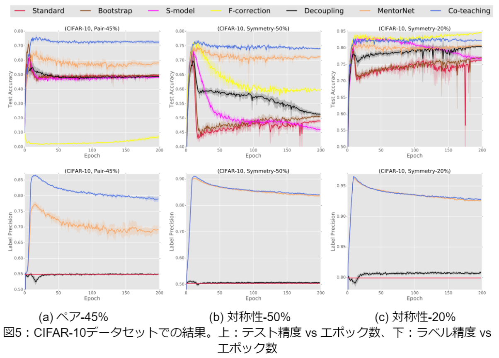
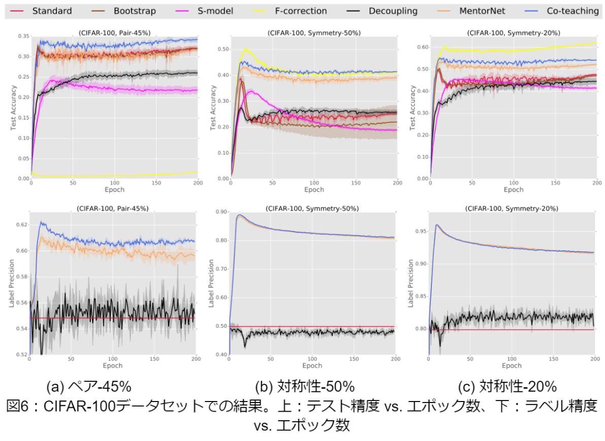

論文
・ Year ： NIPS 2018
・ リンク
・ github
１．どんなものか
2つの学習モデルを同時に学習させ，ミニバッチごとに互いに教えあうような枠組みを提案． 各ネットワークでクリーンラベルであるようなデータを特定する．次に，各ネットワークが互いにミニバッチ内 のどのデータで学習したのかを伝え，各ネットワーク同士で相手が学習したデータを逆伝播する．
２．先行研究との差分
MonitorNet
学習損失の小さい例をクリーンなデータとみなして相手のネットワーク更新に用いる点は先行研究のDecouplingと同じ．
しかし，重みの更新に用いるデータは相手ネットワークによって選択されており互いに異なる識別能力を持つモデル
によって構成される点で異なる．
３．技術や研究のキモ
cnnの特徴
ネットワークは学習初期に小損失のクリーンデータから学習し，ノイズデータに対してはあまり学習しないという性質を 持っている．このフィルタリング能力を用いて，小損失であったデータは相手のネットワークのパラメータ更新に用いられる．
伝達データ数
Co-teachingではモデルの学習初期には損失の小さいデータを多く相手ネットワークに伝え，学習が進むにつれて 伝達するデータ数を徐々に減らしていく． モデルが学習初期時にクリーンラベルで学習することができれば，学習後半でノイズラベルデータにに対して損失値 を大きく判断することができるようになり，きれいなネットワーク状態を保つことができる．
４．有効性の証明
cifar-10，cifar-100，mnistによるベンチマークにより証明される．


５．議論
なし